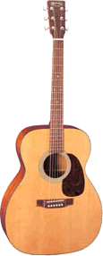
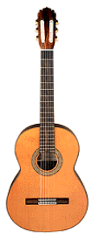
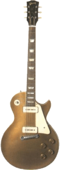

Guitarras Acústicas
Las modernas guitarras acústicas son de dos tipos: con cuerdas de nylon y con cuerdas de acero.
Aunque en general las cuerdas de nylon se usan para flamenco y música clásica, y las de acero son
más corrientes en folk, blues, jazz y rock, no hay reglas estrictas.
La guitarra de cuerdas de acero es un descendiente directo de la guitarra «española» o «clásica», una obra maestra de diseño, tanto en términos de acústica como de artesanía.

Clásicas: La guitarra clásica es la antecesora de todas las guitarras actuales. Las guitarras clásicas se siguen construyendo casi exactamente a la manera de Torres,
la figura más importante en la historia del diseño y construcción de guitarras.

Guitarras Eléctricas
También la guitarra eléctrica, como la acústica de cuerdas de acero, tuvo su origen en Estados Unidos. El rasgo distintivo de todas las guitarras eléctricas es la pastilla, una
unidad fonocaptora que convierte el sonido del instrumento o la vibración de las cuerdas en una señal eléctrica. Esta señal pasa a un amplificador, y se vuelve a transformar en
sonido en un altavoz.
Los nombres clave en la evolución de la moderna guitarra eléctrica de caja maciza son Lloyd Loar, Adolph Rickenbacker, Leo Fender y Les Paul. Gran parte del trabajo experimental
se realizó en las compañías Fender y Gibson, que siguen dominando el mercado.
En los últimos años los japoneses y otros fabricantes orientales han inundado el mercado de guitarras económicas que dan excelentes resultados. Las mejores de ellas ofrecen una
combinación de calidad y bajo precio que ha hecho conmoverse a toda la industria. Lo cierto es que la gran variedad de modelos existentes, desde los primeros modelos americanos
hasta las más recientes guitarras-sintetizadores Roland, puede desconcertar al principiante que trate de elegir una guitarra eléctrica.
Gibson
Les Paul: La versión más divulgada es la del modelo Standar, que tiene dos pastillas de doble bobinado (humbucker), y un selector con tres posiciones de pastillas.
Es muy apropiada para tocar jazz y blues, así como diversos temas de los 60 y 70. En los 90 ha resurgido gracias a Guns’n’Roses, Gary Moore y los grupos grunge.
